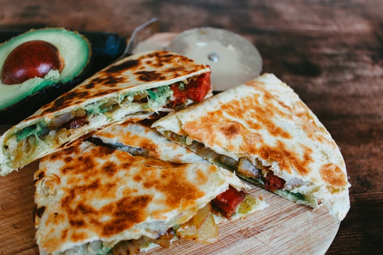

Chicken quesadilla recipe

Melt-in-your-mouth chicken quesadilla!
An easy and delicious chicken quesadilla for anyone who wants something to snack on!
Ingredients
- 1 pound chicken breasts (cut into bite sized pieces)
- 1 tablespoon oil
- 1/2 cup diced bell pepper
- 1/2 cup diced onion
- 2 cloves garlic (minced)
- 1 tablespoon taco seasoning
- 2 cups shredded melting cheese
- 4 medium flour tortillas
Steps
- Cut chicken breasts into small bite size pieces. Heat oil over medium-high heat. Add the chicken breasts and taco seasoning to the pan. Sautee 4-5 minutes then add the bell pepper, onion, and garlic, sautee another 5 minutes or until the chicken is cooked through.
- In a new pan, add ½ teaspoon oil and a tortilla, top with a handful of shredded cheese, and 1/4th the chicken mixture, then with more cheese. Fold the tortilla and cook on both sides until crispy and golden. Remove from the pan and repeat with remaining tortillas.
- To serve: Slice tortillas in half or thirds and serve with sour-cream, salsa, guacamole or your favorite dipping sauce.